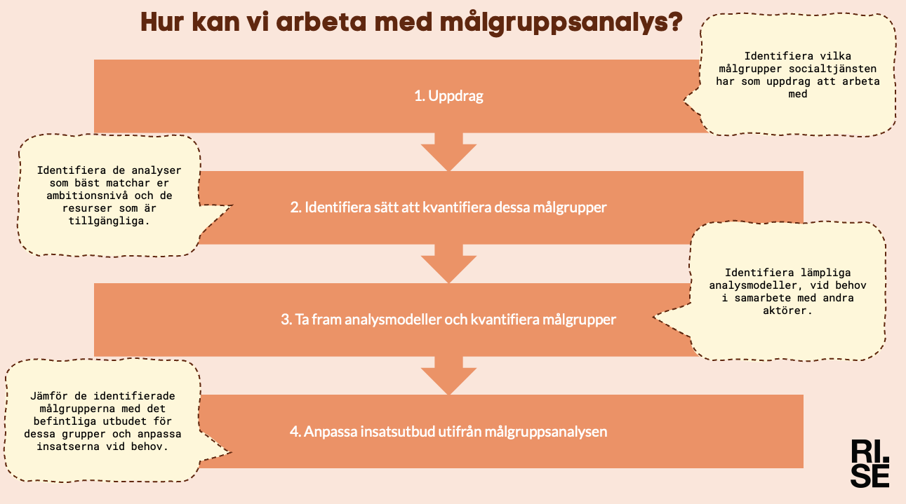
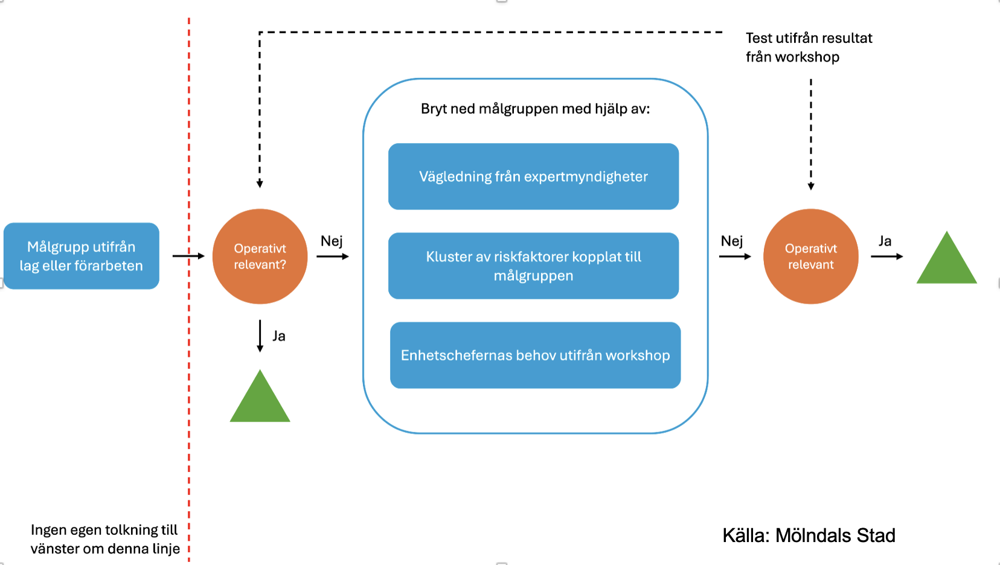
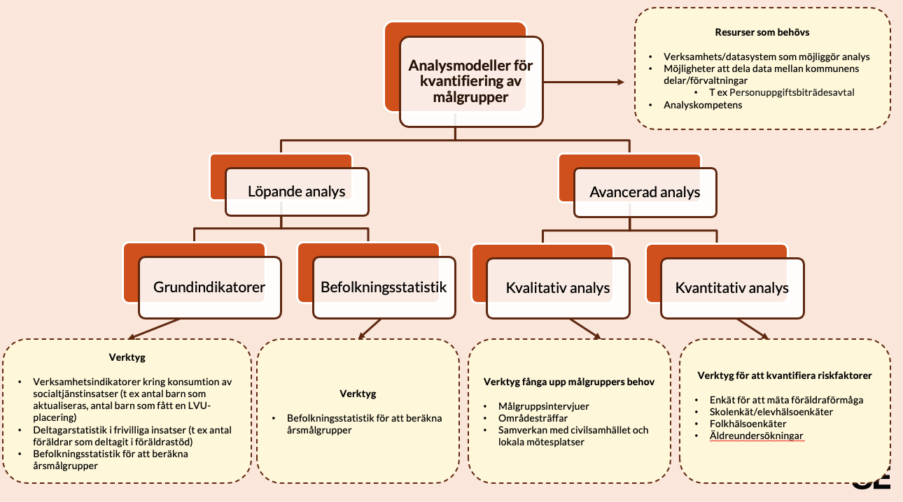
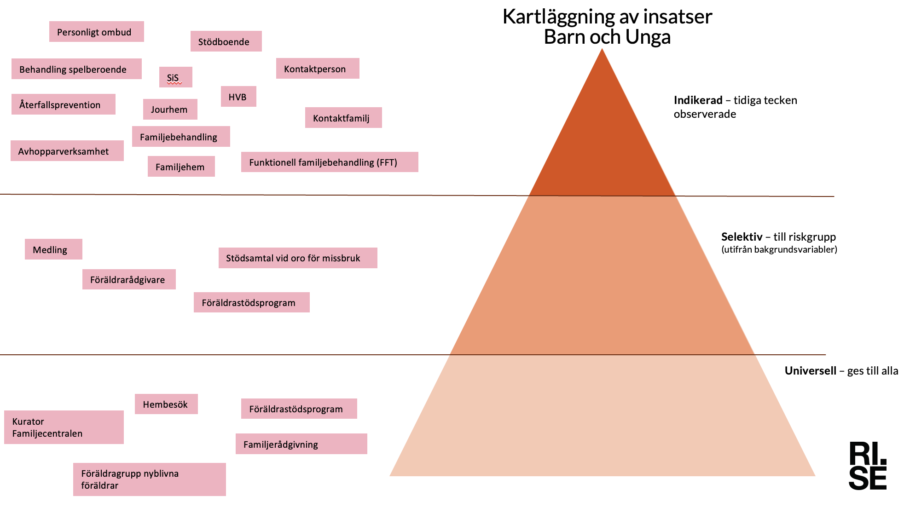

2.1 Hur kan vi arbeta med målgruppsanalys?
För att kunna utveckla ett mer behovsanpassat och förebyggande socialt arbete behöver socialtjänsten god kunskap om sina målgrupper. Det handlar både om att veta vilka grupper som ska prioriteras, och att kunna kvantifiera dessa – alltså uppskatta hur stora de är och hur många som nås av befintliga insatser. Nedan presenteras en process i fyra steg som kan användas som vägledning i detta arbete.
1. Kartlägg målgrupper - Utgå från uppdrag och behov Börja med att definiera vilka målgrupper socialtjänsten har i uppdrag att arbeta med. Det kan handla om lagstiftningens krav, lokala prioriteringar eller identifierade samhällsutmaningar. Det är grunden för hela analysarbetet.
2. Identifiera sätt att kvantifiera målgrupperna När målgrupperna är definierade behöver ni hitta sätt att uppskatta deras storlek. Det kan handla om att använda registerdata, statistik, enkäter eller andra informationskällor. Här är det viktigt att anpassa ambitionsnivån efter de resurser och data som finns tillgängliga.
3. Ta fram analysmodeller Baserat på valda datakällor och analysmöjligheter formuleras analysmodeller som gör det möjligt att kvantifiera målgrupperna på ett systematiskt sätt. Ibland kan detta göras internt, men ofta krävs samverkan med andra aktörer som exempelvis regionen eller skolan.
4. Använd analysen för att utveckla insatser Slutligen används resultaten för att jämföra den identifierade målgruppen med de insatser som faktiskt finns tillgängliga. Får rätt personer rätt stöd? Saknas något? Behöver insatser skalas upp eller omformas? Genom att anpassa insatsutbudet utifrån målgruppsanalysen kan socialtjänsten bli mer träffsäker och effektiv i sitt förebyggande arbete.
Se bilden nedan som en översiktlig processkarta som illustrerar dessa fyra steg – med stödjande frågor att reflektera över i varje del.

2.2 Kartläggning
Ett första steg i målgruppsarbetet är att kartlägga de målgrupper socialtjänsten har. Detta styrs först och främst av de lagrum som reglerar socialtjänstens uppdrag. Dessa lagrum lämnar dock ofta utrymme för tolkning när det gäller konkreta målgrupper. Därför kan det behövas ett lokalt arbete i att dels tolka lagtexten och lagens förarbeten, men också i att inom verksamheten diskutera och avgränsa uppdragens målgrupper utifrån forskning och verksamhetserfarenhet.
Illustrationen nedan visar ett exempel på kartläggningsprocess från Mölndals stad, som tar utgångspunkt i lagtexter och förarbeten och för att bestämma de grundläggande målgrupperna. För att bryta ner dessa målgrupper i mer operativt releventa grupper används sedan vägledning från expertmyndigheter, riskfaktorer kopplat till målgruppen samt lokala chefers behov.
 Exempel på underlag som kan användas för att identifiera relevanta riskfaktorer kopplat till målgrupperna är RISE rapport om risk- och skyddsfaktorer.
När kartläggninsgarbetet är genomfört finns en bruttolista på relevanta målgrupper som socialtjänsten har uppdrag att arbeta med. Därefter kommer frågeställningarna kring hur stora målgrupperna är och hur lätt det är att nå dem, vilket analyseras i nästa steg.
2.3 Kvantifiering och analys
I arbetet med målgruppsanalys finns olika nivåer av ambition och tillgång till data. Det viktiga är att utgå från den egna kommunens förutsättningar – både vad gäller kapacitet, tillgång till information och vilka frågor som behöver besvaras. Oavsett nivå kan målgruppsanalys bidra till bättre planering, styrning och utveckling av socialtjänstens förebyggande arbete.
En grund för att diskutera verksamhetens arbete med olika målgrupper och behov kan vara resultaten i SKR-undersökningen Skatta läget.
Exempel på verktyg och resurser för analysarbete

Löpande och indikatorbaserad analys
En enklare, men värdefull nivå av målgruppsanalys kan bygga på återkommande uppföljning av ett urval indikatorer från tillgängliga källor, såsom verksamhetssystem, statistik från SCB eller annan befolkningsdata. Detta kan ge en löpande bild av utvecklingen i kommunen och bidra till tidig upptäckt av förändringar.
Exempel:
• Konsumtion av socialtjänstens insatser över tid
• Årliga målgruppsuppskattningar kopplade till olika insatser
Här finns ett exempel från Göteborgs Stad kring hur befolkningsstatistik kan användas för att beräkna årsmålgrupper för föräldrastödsinsatser: Göteborgs stad: Beräkning av årsmålgrupper
• Statistisk analys av befolkningsutveckling, socioekonomiska förutsättningar eller skolresultat
Här finns ett exempel på hur en dash-board med relevanta indikatorer framtagen av Stockholms stad med utgångspunkt i målgruppen Barn och Unga.
Fördjupad målgruppsanalys
I vissa fall behövs en mer djupgående analys för att bättre förstå bakomliggande faktorer, behov eller risker i befolkningen. Här kan både kvantitativa och kvalitativa metoder användas för att komplettera statistiken med fördjupad kunskap om levnadsförhållanden och upplevda behov.
Exempel:
• Enkätundersökningar för att kartlägga förekomst av riskfaktorer, exempelvis psykisk ohälsa eller föräldraförmåga
• Intervjuer eller fokusgrupper med ungdomar om livsvillkor, trygghet och tillgång till stöd
• Analys av sammansatt data från olika verksamheter för att identifiera komplexa behov
Här finns ett exempel på missv och enkät kring föräldraskap framtaget av Göteborgs Stad.
Kombinerade modeller
Det mest träffsäkra kunskapsunderlaget får man ofta genom att kombinera flera typer av analyser – en grundläggande indikatorbaserad analys kompletterad med mer kvalitativa eller tematiska studier vid behov. På så sätt kan kommunen följa övergripande trender och samtidigt fördjupa förståelsen där det behövs.
2.4 Prioritering och insatsanalys
Efter att målgrupperna kartlagts och volymberäknats kan det finnas behov av att utifrån de underlagen prioritera vilka målgrupper socialtjänsten ska arbeta med under den närmaste planeringshorisonten.
En viktig fråga att beakta i prioriteringsdiskussionen är huruvida det finns insatser för en målgrupp och hur kostnadseffektiv insatsen är.
Insatsanalys
För att det ska vara aktuellt att arbeta med en målgrupp finns det ett behov av tillgänliga insatser som kan möta målgruppens behov. Det kan redan finnas kunskapsbaserade insatser som används eller kan implementeras i verksamheten och här blir det viktigt att ställa sig frågan vad som redan görs för målgrupperna och hur bra det fungerar.
Exempel på en visualiserad insatskartläggning:  En viktig fråga är exemplevis hur väl socialtjänsten når ut med befintliga insatser, här kan det finnas ett behov av att följa upp och kartlägga genomfört arbete för att kunna svara på den frågan.
Här finns ett exempel på en uppföljningsenkät Uppföljningsenkät för ABC-programmet i Göteborgs stad som används för att se hur stort deltagande staden har i insatsen samt hur väl staden når föräldrar med olika bakgrund. Detta kan bidra till en diskussion om hur staden ska prioritera satsningen på fölräldrastöd i stadens olika områden.
Om socialtjänsten vid sin insatskartläggning märker gap i verksamheten i förhållande till målgruppernas behov så kan det finnas behov av att implementera kunskapsbaserade insatser eller att utveckla nya insatser för målgruppens behov.
Ekonomisk analys
I prioriteringsarbetet kan det också finnas behov av att analysera de ekonomiska aspekterna av att arbeta med en målgrupp eller en insats. Exempelvis kan det vara intressant att undersöka om det finns någon forskning som pekar på kostnadseffektiva insatser för målgruppens behov eller att analysera hur de ekonomiska konsekvenserna för verksamheten påverkas av att insatser kopplat till målgruppens behov görs tidigt eller sent i preventionstriangeln.
Göteborgs Stad har tagit fram en verksamhetsekonomisk analys av att satsa på föräldratstöd jämfört med att barn och unga aktualiseras för kriminellt beteende inom socialtjänsten och får öppenvård, HVB-, SiS- och/eller Familjehemsplacering. Här finns allt underlag till dessa beräkningar, som går att anpassa efter andra insatser: